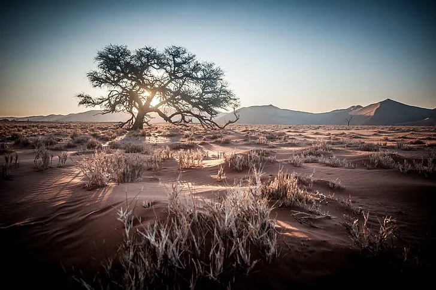
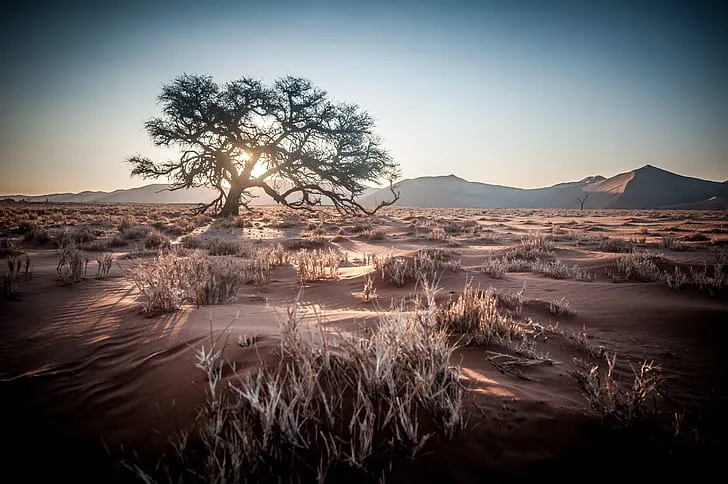

História da Namíbia
Das pinturas rupestres dos San à independência em 1990, uma jornada de resistência e resiliência.
A Namíbia foi habitada desde os tempos pré-históricos pelos povos San (Bosquímanos), como evidenciado pelas pinturas rupestres de Twyfelfontein. No século XIV, chegaram os povos Bantu, incluindo os Herero e Ovambo. Colonizada pela Alemanha em 1884, tornou-se o Sudoeste Africano Alemão, cenário do primeiro genocídio do século XX contra os Herero e Nama. Após a Primeira Guerra Mundial, a África do Sul administrou o território até a independência em 1990.

Celebrações da independência em 21 de março de 1990
Você sabia?
A Namíbia foi o primeiro país do mundo a incluir a proteção ambiental em sua constituição.
Desde a independência, a Namíbia tem sido um modelo de estabilidade democrática na África, com eleições regulares e transições pacíficas de poder. O país enfrenta desafios como desigualdade econômica e os efeitos do apartheid, mas tem feito progressos significativos em desenvolvimento humano.
Geografia da Namíbia
Um país de extremos: do deserto mais antigo do mundo a costas espetaculares.
A Namíbia está localizada no sudoeste da África, fazendo fronteira com Angola, Zâmbia, Botsuana, África do Sul e o Oceano Atlântico. O país é dominado pelo deserto do Namibe, considerado o mais antigo do mundo, e pelo planalto central. A costa dos Esqueletos é uma das mais inóspitas e espetaculares do planeta.

Mapa mostrando a diversidade geográfica da Namíbia
Destaque Geográfico
As dunas de Sossusvlei, algumas das mais altas do mundo (até 380m), mudam de cor ao longo do dia, do rosa ao laranja intenso.
Principais características geográficas:
- Deserto do Namibe (o mais antigo do mundo)
- Planalto Central (altitude média de 1.700m)
- Deserto do Kalahari (a leste)
- Costa dos Esqueletos (500km de costa desértica)
- Pan de Etosha (depressão salina de 5.000 km²)
- Rio Orange (fronteira com a África do Sul)
Teste Seu Conhecimento
Qual é a característica única do deserto do Namibe?
Economia da Namíbia
Rica em recursos naturais, a Namíbia busca um crescimento inclusivo e sustentável.
A economia da Namíbia baseia-se na mineração (diamantes, urânio, ouro), agricultura, turismo e manufatura. O país é o quarto maior exportador de minerais não combustíveis da África e o quinto maior produtor mundial de urânio. Apesar de sua classificação como país de renda média-alta, a Namíbia tem uma das distribuições de renda mais desiguais do mundo.

Mineração de diamantes, setor importante da economia
Dado Econômico
A Namíbia tem o maior índice de liberdade econômica da África Subsaariana e é considerado um dos países menos corruptos do continente.
Principais setores econômicos:
- Mineração (diamantes, urânio, ouro, zinco)
- Turismo (safáris, ecoturismo, turismo de aventura)
- Agricultura (gado, produtos marinhos, uvas)
- Pesca (principalmente sardinha e anchova)
- Manufatura (processamento de alimentos, bebidas)
Interessado em oportunidades na Namíbia?
Conheça os setores em crescimento e as oportunidades de investimento neste mercado estável.
SAIBA MAISFauna da Namíbia
Um santuário para vida selvagem adaptada a alguns dos ambientes mais extremos da Terra.
A Namíbia abriga uma impressionante variedade de vida selvagem, desde elefantes do deserto até rinocerontes negros ameaçados de extinção. O país foi o primeiro na África a incluir a proteção ambiental em sua constituição e tem cerca de 42% de seu território sob algum tipo de conservação.

Rinoceronte negro, espécie ameaçada protegida na Namíbia
Curiosidade Animal
Os elefantes do deserto da Namíbia são adaptados para sobreviver com pouca água e podem percorrer grandes distâncias em busca de alimento.
Principais espécies e onde encontrá-las:
- Parque Nacional Etosha: leões, elefantes, rinocerontes, girafas, zebras
- Deserto do Namibe: oryx, hiena-marrom, avestruz
- Damaraland: rinocerontes negros, elefantes do deserto
- Costa dos Esqueletos: focas, flamingos, pelicanos
- Rio Zambeze (Caprivi): hipopótamos, crocodilos, muitas aves
Vida Selvagem


Cultura da Namíbia
Um mosaico de tradições indígenas e influências coloniais em harmonia.
A cultura namibiana é uma rica tapeçaria de grupos étnicos, incluindo os Ovambo (maior grupo), Herero, Himba, Damara, Nama, San e outros. Cada grupo mantém tradições distintas, desde a vestimenta colorida dos Herero até os elaborados penteados e adornos dos Himba. A influência alemã é visível na arquitetura e culinária, especialmente em cidades como Windhoek e Swakopmund.

Mulheres Herero em trajes tradicionais influenciados pela era colonial
Patrimônio Cultural
O Oshituthi shomagongo, festival das frutas marula dos povos Aawambo, é reconhecido pela UNESCO como Patrimônio Cultural Imaterial.
Principais aspectos culturais:
- Línguas: Inglês (oficial), Oshiwambo, Afrikaans, Alemão, línguas locais
- Religiões: Cristianismo (90%), crenças tradicionais
- Arte: Pinturas rupestres, esculturas em madeira, cestaria
- Música: Estilos tradicionais como o Oshiwambo e influências ocidentais
- Culinária: Influências alemãs (salsichas, cerveja) e pratos locais como o kapana
Atrações da Namíbia
Das dunas mais altas do mundo a cidades coloniais encantadoras.
A Namíbia oferece algumas das paisagens mais espetaculares da África, combinadas com uma infraestrutura turística de qualidade. As atrações variam de parques nacionais repletos de vida selvagem a formações geológicas únicas e cidades com arquitetura colonial alemã.

Swakopmund, cidade costeira com arquitetura alemã
Destaque Turístico
Fish River Canyon é o segundo maior cânion do mundo (após o Grand Canyon), com 160km de extensão e até 550m de profundidade.
Principais atrações:
- Sossusvlei e Deadvlei (dunas icônicas e árvores mortas)
- Parque Nacional Etosha (melhor safári fotográfico)
- Costa dos Esqueletos (paisagem lunar e naufrágios)
- Twylfelfontein (arte rupestre da UNESCO)
- Damaraland (paisagens vulcânicas e vida selvagem)
- Fish River Canyon (segundo maior do mundo)
- Windhoek (capital com mistura de África e Europa)
- Swakopmund (cidade colonial à beira-mar)
Turismo na Namíbia
Um destino para viajantes que buscam aventura, natureza intocada e culturas autênticas.
A Namíbia é um dos melhores destinos africanos para viagens autoguiadas, com estradas bem mantidas e paisagens de tirar o fôlego. O país oferece safáris de classe mundial, aventuras no deserto, encontros culturais com tribos locais e atividades como sandboard nas dunas ou voos panorâmicos sobre o deserto.

Safári no Parque Nacional Etosha, uma experiência imperdível
Dado Turístico
A Namíbia é um dos poucos países onde você pode ter uma experiência de safári autoguiado, com a liberdade de explorar parques nacionais em seu próprio veículo.
Dicas para viajantes:
- Melhor época: maio a outubro (estações secas para vida selvagem)
- Transporte: aluguel de carro 4x4 é ideal para explorar o país
- Acomodação: de acampamentos básicos a lodges de luxo
- Atividades: safáris, caminhadas nas dunas, observação de estrelas
- Orçamento: varia de econômico a alto luxo
Pronto para explorar a Namíbia?
Descubra roteiros personalizados para conhecer as maravilhas deste país único.
VER OPÇÕES DE VIAGEM